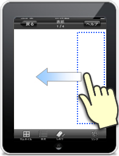
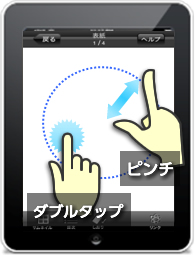
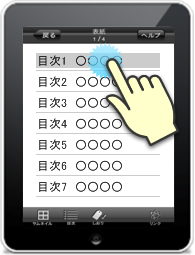
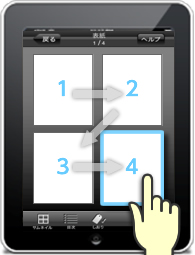

ブックタイトル ：corgi.pdf
-
- 
- ブックが左開きの場合、画面の３分の１にあたる領域をタップするか、右から左に画面をフリックすると
ページをめくることができます。
-
- 
-
画面中央のあたりをダブルタップ、もしくはピンチアウトするとページを拡大することができます。 また、ピンチインの操作で画面を縮小することができます。
拡大後の画面はドラッグすることで移動できます。
-
- 表示されているブックの全ページのサムネイルが表示されタップするとそのページにジャンプできます。
-

- 
- 拡大時、画像をドラッグして移動。もしくは画面右上に表示されるナビゲータの赤い枠をドラックして移動。
-
- ユーザが自分のお気に入りのページにしおりをつけておくことができ、いつでもそのしおりの貼られたページへジャンプすることが可能です。
-
- 
この機能をONにすると、拡大された状態で画面タップに応じて自動的に指定したステップの通りに遷移して閲覧できます。
※ステップが設定されていないページではステップアイコンが非表示となります。
設定によって様々なリンクがあります。アイコンによってどんな種類か見分ける事が可能です。
※リンクが設定されていないページではリンクアイコンが非表示となっています。
リンクの種類
-
アプリ内ブラウザリンク
アプリを一旦閉じることなく指定されたリンク先にジャンプする事が出来ます。
-
ブック内リンク
ブック内の指定されたページにジャンプする事が出来ます。
-
アプリ外ブラウザリンク
アプリが自動的に閉じ、Safariが立ち上がり、指定されたリンク先にジャンプすることが出来ます。
-
音声ファイルリンク
指定された音声ファイルが再生され、該当のページから移動するまで流れ続けます。
（ダウンロードして閲覧していない場合、音声ファイルの大きさや通信環境によってリンクを押してからタイムラグが出る場合があります）
※サウンドオフになっている場合機能しません。
※「iPhone」，「iPad」及び「App Store」は， Apple Inc.の商標又は登録商標です。
※「Android」及び「Android Market」はGoogle Inc.の商標又は登録商標です。